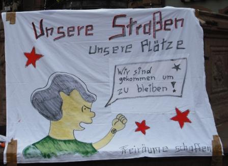
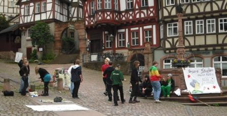
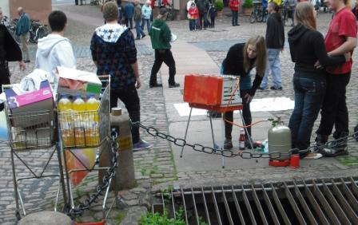

Der gestrige Samstag brachte der Miltenberger Innenstadt mal wieder eine bunte Bereicherung. Knapp 20 junge Leute aus der JuZ (Jugendinitiative für ein unabhängiges Zentrum) zogen vom Bahnhof durch die Innenstadt, liefen demonstrierend mehrfach durch die Fußgängerzone und erläuterten mit Transparenten, Flugblättern und Megaphon-Durchsagen ihre Ziele. Am historischen Markplatz richteten sie sich dann ein, grillten „vegane Schnitzel“ und forderten die Zuschauenden auf, sich an Essen und Trinken (Softgetränke und Bier – leider Öttinger) zu bedienen, was erwartungsgemäß nicht auf sonderlichen Zuspruch stieß. So verzehrten die JuZ-Leute die Sachen halt selbst.
Die Polizei beschränkte sich – nachdem sie vor dem Abmarsch am Bahnhof kurzfristig telefonisch über die Eilveranstaltung informiert worden war – auf eine Begleitung in die Innenstadt und erschien dann erst später wieder, um das Ende der Veranstaltung anzumahnen. Die Presse kam mit einer Fotografin und auch die Touristen fotografierten und filmten die Demonstration.
Es scheint so zu sein, dass die JuZ zum festen Bestandteil Miltenbergs geworden ist. Zumindest was die Berücksichtigung als touristische Attraktion betrifft. Denn von den Stadtoberen gilt die Initiative mit ihrem Konzept eines selbstverwalteten Jugend- und Kultur-Zentrums (genannt Mil-Z – Miltenberger Zentrum) nicht als verhandlungsfähig. Daher ist zu vermuten, dass dies nicht die letzte Aktion war.

Denn ohne Räume werden die JuZ-Leute auch weiterhin darauf angewiesen sein, öffentliche Plätze und Straßen zu nutzen, um sich zu treffen und zu feiern. Wie sagt schon Lucy Van Pelt auf dem Transparent, das der Demonstration vorangetragen wurde: „Wir sind gekommen, um zu bleiben!“
Die Demonstration …

endete am Marktplatz, …
wo Musik spielte …

und ein Grill aufgebaut wurde.
Fotos: Archiv kommunal

leute des bringt doch eh alles nichtsmehr.
sehts ein.
wie lang versucht ihrs schon? 1,5 jahre??
Das Bier wurde Privat mitgebracht, von der JuZ kamen nur die Softgetränke.
Liebe Grüße
JuZ
Bunte Straßenparty unter strenger Beobachtung
Juz: 20 Aktive ziehen mit Hip-Hop-Musik, Transparenten und Grillgut durch Miltenberg – Forderung nach einer autonomen Einrichtung
Miltenberg Mit einer Straßenparty hat am Samstag die Jugendinitiative unabhängiges Zentrum (Juz) auf ihre Forderung nach einer autonomen Jugendeinrichtung aufmerksam gemacht. Die Veranstaltung stand den Aktivisten zufolge unter strenger Beobachtung der Polizei.
Gegen 14 Uhr starteten die Jugendlichen am Miltenberger Bahnhof, teilt M. [Name durch subradical anonymisiert] im Namen der Initiative mit. Dort wurde M. zufolge die Aktion durch einen Anruf im Miltenberger Polizeirevier angemeldet, allerdings ohne einen Leiter der Versammlung zu nennen.
Mit bis zu 20 Leuten zog die bunte Gruppe, singend, tanzend und Parolen rufend über die Mainbrücke in Richtung Fußgängerzone. Ausgestattet waren sie mit Prospekten, Transparenten, außerdem einer Musikanlage, Limonade und Grillgut. In der Fußgängerzone begleitete ein Streifenwagen der Polizei, den Demonstrationszug bis zum Schnatterloch. Nachdem die Jugendlichen den Beamten einige Flyer gegeben hatten, verließen die Beamten den Ort des Geschehens.
Prospekte und Parolen
Die Juz-Aktivisten zogen zu Electro- und Hip-Hop-Musik feiernd zweimal durch die Einkaufsstraße und unterrichteten Passanten durch Flyer und Megaphondurchsagen über die aktuellen Miltenberger Verhältnisse und die Absichten und Ziele der Juz. Zudem luden sie die Passanten zum kostenlosen Grillfest am Schnatterloch ein – allerdings fand die Feier keine Resonanz, die Aktiven verputzten ihre Brötchen selbst.
»Hier konnte jeder Interessierte feststellen, dass ein unkommerzielles Ereignis der Miltenberger Jugendkultur nicht wie immer prophezeit im Chaos endet«, betont M. in der Mitteilung. Während der Aktion tauchten ihm zufolge immer wieder Polizeibeamte auf, die sich nach Ablauf erkundigten. Gegen 16 Uhr erschien der Einsatzleiter sowie drei Streifenpolizisten, die die Aktivisten aufforderten ihre Aktion bis 17 Uhr zu beenden.
Zur gestellten Frist verließen die Feiernden den von ihnen aufgeräumten Markplatz. »Wir sind mit der Aktion zufrieden. Wir konnten unsere Ansichten und Ziele vielen Leuten vermitteln sowie eine tolle Zeit miteinander verbringen«, so das Fazit der Straßenparty-Veranstalter. »Schade finden wir nur die schlechte Resonanz auf die Grillfeier.«
red
Bote vom Untermain, 22.05.10
Bilder von der Aktion und die Pressemitteilung gibt es übrigens auf unserer seite:
http://milz.blogsport.de/2010/05/19/wir-sind-gekommen-um-zu-bleiben-2/